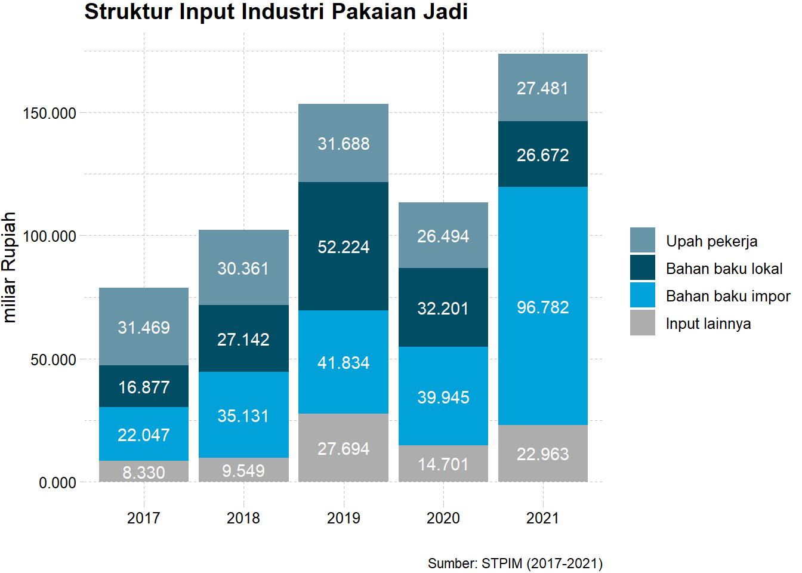

Executive Summary: Statistik Industri Tekstil dan Pakaian Jadi
Pendahuluan
Industri tekstil dan produk tekstil (TPT) merupakan salah satu sektor unggulan dalam perekonomian Indonesia. Sektor ini tidak hanya menjadi tulang punggung ekspor non-migas, tetapi juga berperan penting dalam penyerapan tenaga kerja dan pertumbuhan industri dalam negeri, di mana industri TPT menyumbang sekitar 4,88 persen terhadap kinerja industri manufaktur nasional. Sebagai negara dengan populasi yang besar dan tenaga kerja yang kompetitif, Indonesia memiliki potensi besar untuk terus mengembangkan industri TPT.
Dalam beberapa tahun terakhir, industri TPT Indonesia telah mengalami dinamika tantangan baik lokal maupun global, khususnya di sisi produksi, tenaga kerja, hingga bahan baku. Oleh karena itu, analisis deskriptif tren industri TPT sangat penting untuk memahami kondisi industri ini dalam beberapa tahun terakhir.
Dalam executive summary ini, kami akan menyajikan gambaran umum mengenai performa industri TPT Indonesia, meliputi data jumlah perusahaan, tenaga kerja, output dan strukturnya, input dan strukturnya, serta isu-isu terkait yang mempengaruhi sektor ini. Harapannya, informasi ini dapat menjadi acuan bagi para pemangku kepentingan dalam mengambil keputusan strategis untuk meningkatkan daya saing dan keberlanjutan industri TPT di Indonesia.
- Industri tekstil dan produk tekstil (TPT) mencakup kategori C (Industri Pengolahan) golongan pokok 13 industri tekstil dan golongan pokok 14 industri pakaian jadi dalam Klasifikasi Baku Lapangan Usaha Indonesia (KBLI).
- Sumber data yang digunakan merupakan gabungan dari hasil Updating Direktori (DPA) dan Survei Tahunan Perusahaan Industri Manufaktur (STPIM) yang dilakukan setiap tahun. Target responden survei adalah perusahaan berskala besar dan sedang.
- Klasifikasi usaha berdasarkan tenaga kerja: usaha dengan jumlah tenaga kerja 20-99 orang diklasifikasikan sebagai skala besar, sedangkan usaha dengan jumlah tenaga kerja lebih dari 99 orang diklasifikasikan sebagai skala sedang.
- Publikasi lengkap dapat dilihat di www.bps.go.id
Jumlah perusahaan
Jumlah perusahaan dalam industri Tekstil, Pakaian, dan Tekstil (TPT) mengalami penurunan tren sepanjang 2016-2021. Namun, pada tahun 2023, terdapat sedikit peningkatan jumlah perusahaan industri tekstil dibandingkan dengan dua tahun sebelumnya. Pada tahun 2023, jumlah perusahaan industri tekstil mencapai 2.079 perusahaan, naik dari 1.988 perusahaan pada tahun 2021. Sementara itu, jumlah perusahaan industri pakaian jadi juga sedikit meningkat, 2.005 perusahaan pada tahun 2021 menjadi 2.062 perusahaan pada tahun 2023.
Sebaran industri tekstil dan pakaian jadi
Industri TPT tersebar di beberapa provinsi di Indonesia, namun utamanya industri ini masih bersifat Jawa-sentris seperti ditunjukkan pada peta sebaran industri TPT di bawah.
Tren industri tekstil dan pakaian jadi di Pulau Jawa, 2016-2023
Isu relokasi perusahaan TPT dari suatu wilayah ke wilayah lain di Pulau Jawa dikarenakan faktor kenaikan upah minimum tidak terlihat pada peta tren sebaran industri di atas. Provinsi Jawa Barat, contohnya, mengalami penurunan jumlah industri TPT sepanjang 2016 hingga 2023, dari 2.380 menjadi 1.660 perusahaan. Penurunan jumlah industri di Provinsi Jawa Barat tidak menunjukkan indikasi adanya relokasi usaha ke provinsi lain dengan upah minimum yang lebih rendah, seperti Provinsi Jawa Tengah, sebab semua provinsi di Pulau Jawa, kecuali DI Yogyakarta, tercatat mengalami penurunan jumlah perusahaan industri TPT sepanjang 2016-2023.
Tenaga kerja
Tren tenaga kerja di industri TPT cenderung mengalami penurunan beberapa tahun ke belakang. Pada tahun 2021, industri tekstil menyerap 391.007 tenaga kerja. Sementara tenaga kerja pada industri pakaian jadi mencapai 749.183 orang pada periode yang sama.

Output
Output industri TPT berfluktuaktif sepanjang 2016-2021. Pada tahun 2019, sebelum pandemi Covid-19, industri TPT menghasilkan output tertinggi dalam 6 tahun terakhir, di mana nilainya mencapai 695.209 miliar Rupiah. Pada periode selanjutnya, kinerja industri TPT terindikasi mengalami pelemahan yang terlihat dari penurunan output menjadi 547.421 miliar Rupiah pada 2021.
Struktur output industri tekstil
Struktur output industri tekstil rata-rata didominasi oleh nilai produksi barang. Pada tahun 2021, nilai produksi barang tekstil mencapai 243.003 miliar Rupiah. Sementara, proporsi terkecil dalam output indsutri tekstil adalah nilai maklun/jasa yang nilainya sebesar 7.633 miliar Rupiah. Sisanya, 23.297 miliar Rupiah berasal dari pendapatan lainnya.
Pada industri pakaian jadi, perubahan struktur output terlihat pada grafik di bawah. Pada tahun 2017, komposisi output industri pakaian jadi didominasi oleh nilai maklun/jasa, di mana nilainya, 109.292 sedikit lebih besar dibandingkan nilai produksi barang, 80.475. Pada periode selanjutnya, tercatat nilai produksi barang berkontribusi signifikan dalam struktur output industri pakaian jadi. Nilai produksi pakaian jadi mencapai 224.230 pada tahun 2021, sementara nilai maklun/jasa tercatat sebesar 33.627 dan pendapatan lain sebesar 15.631.
Struktur output industri pakaian jadi

Input
Input meliputi pengeluaran upah untuk tenaga kerja, bahan baku lokal dan impor, serta pengeluaran untuk input lainnya yang dikeluarkan oleh perusahaan.
Total pengeluaran untuk input produksi industri TPT berfluktuasi sepanjang 2016-2021. Total pengeluaran input industri TPT tertinggi terjadi pada tahun 2019, di mana nilainya mencapai 377.505 miliar Rupiah. Pada tahun 2021, nilai input pada industri tekstil mengalami penurunan dibandingkan beberapa tahun sebelumnya menjadi 167.398 miliar Rupiah. Sebaliknya, nilai input industri pakaian jadi meningkat menjadi 146.417 miliar Rupiah di tahun 2021.
Struktur input industri tekstil
Struktur input industri tekstil rata-rata didominasi oleh pengeluaran untuk bahan baku. Sepanjang 2017-2021, tidak ada indikasi bahwa bahan baku impor mendominasi struktur input industri tekstil. Sebaliknya, bahan baku lokal memiliki kontribusi yang lebih besar dibandingkan bahan baku impor di dalam komposisi input industri ini. Pada tahun 2021, nilai pengeluaran untuk bahan baku lokal mencapai 62.99 persen dari total nilai input atau sebesar 115.653 miliar Rupiah. Sementara, pengeluaran bahan baku impor sebesar 16.58 persen atau 30.444 miliar Rupiah.


Struktur input industri pakaian jadi
Perubahan komposisi input industri pakaian jadi cukup dinamis sepanjang 2017-2021. Pelemahan kinerja industri tekstil dalam beberapa tahun terakhir disinyalir berpengaruh terhadap pasokan bahan baku lokal pada industri lanjutannya, yaitu industri pakaian jadi. Nilai pengeluaran untuk bahan baku impor meningkat tajam dari 22.047 miliar Rupiah pada tahun 2017 menjadi 96.782 miliar Rupiah pada tahun 2021 atau 55.65 persen dari total nilai input industri pakaian jadi. Sementara itu, pengeluaran bahan baku lokal hanya berkontribusi 15.34 persen atau sebesar 26.672 miliar Rupiah.
